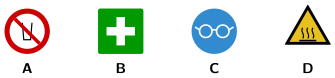

Seguridad con las máquinas
🤔 Pienso5 min
Qué hago aquí: Piensa un momento y contesta con lo que ya sabes. No pasa nada si no lo sabes: es para empezar.
Mira solo la forma y el color. ¿Qué señal prohíbe algo? ¿Cuál avisa de un peligro?

📖 Leo y aprendo15 min
Qué hago aquí: Lee despacio, mira los dibujos y los ejemplos, y quédate con la idea clave del final.
Las señales de seguridad se entienden sin leer. Su forma y su color siempre significan lo mismo.
Algunas máquinas piden que te protejas. Lo que te pones para protegerte es un EPI (equipo de protección individual).
✏️ Hago25 min
Qué hago aquí: Haz las actividades en orden. Empieza siempre por las básicas.
Mira las señales del principio. Escribe el tipo de cada una.
A: B: C: D:
Completa: una señal de color con forma de me prohíbe algo.
¿Qué EPI necesitas para usar la impresora de resina?
Ana quiere sacar una pieza de la impresora 3D nada más terminar. ¿Qué le dices?
✏️ Puedes responder escribiendo, con un dibujo o un esquema, o contándolo en voz alta.
Dibuja una señal para avisar de que la boquilla quema. ¿Qué forma y qué color eliges? ¿Por qué?
🚀 Amplío (si quieres saber más)
Qué hago aquí: ¿Has terminado? Lee la curiosidad o elige el reto. Es voluntario.
Escribe una lista de cuatro pasos que debes comprobar antes de usar la fresadora.
✅ Compruebo5 min
Qué hago aquí: Contesta sin mirar la ficha y marca cómo lo llevas.